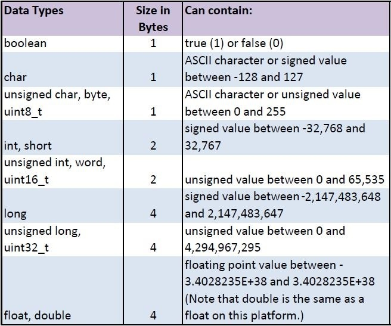

Arduino Foundations
Resources
Arduino Foundations:
Language Reference: Discover the what each term of the Arduino code language means.
Variables: Understand how to define and use variables in a Sketch.
Functions: Learn how to define and use functions in a Sketch.
Constants: TRUE, FALSE HIGH, LOW and INPUT, OUTPUT, INPUT_PULLUP
Data Types
What is data? What does it look like to us? How about to computers? A variable is a container for storing data. Variables consist of a name and a value (and often a type).
Many programming languages require using data types to create a variable. These indicators, like int, float, or boolean tell us what kind of data is being stored in that variable. Some examples of data types are below:
Variables
Variables must be declared before they’re used, though this can be done in the same line.
Variables can be reassigned many times, but only declared once!
Variables should have names that describe their content.
Especially as our code gets more complex and includes more functions, we'll need to pay attention to variable scope. Variables can have a global or function "scope". For example, variables declared within either the setup() or loop() functions may be only used in these functions. Global variables, variables declared outside of setup() or loop(), may be used anywhere within the program.
int val; // any function will see this variable
void setup() {
// ...
}
void loop() {
int i; // "i" is only "visible" inside of "loop"
float f; // "f" is only "visible" inside of "loop"
// ...
for (int j = 0; j < 100; j++) {
// variable j can only be accessed inside the for-loop brackets
}
}
Functions
Segmenting code into functions allows a programmer to create modular pieces of code that perform a defined task and then return to the area of code from which the function was "called". The typical case for creating a function is when one needs to perform the same action multiple times in a program.
Standardizing code fragments into functions has several advantages:
- Functions help the programmer stay organized. Often this helps to conceptualize the program.
- Functions codify one action in one place so that the function only has to be thought out and debugged once.
- This also reduces chances for errors in modification, if the code needs to be changed.
- Functions make the whole sketch smaller and more compact because sections of code are reused many times.
- They make it easier to reuse code in other programs by making it more modular, and as a nice side effect, using functions also often makes the code more readable.
There are two required functions in an Arduino sketch, setup() and loop(). Other functions must be created outside the brackets of those two functions. As an example, we will create a simple function to multiply two numbers.

To "call" our simple multiply function, we pass it parameters of the datatype that it is expecting:
void loop(){
int i = 2;
int j = 3;
int k;
k = myMultiplyFunction(i, j); // k now contains 6
}
Our function needs to be declared outside any other function, so myMultiplyFunction() can go either above or below the loop() function. The entire sketch would then look like this:
void setup(){
Serial.begin(9600);
}
void loop() {
int i = 2;
int j = 3;
int k;
k = myMultiplyFunction(i, j); // k now contains 6
Serial.println(k);
delay(500);
}
int myMultiplyFunction(int x, int y){
int result;
result = x * y;
return result;
}
Arithmetic
The expression to the right of the = symbol is evaluated before the value is assigned to the variable on the left. Therefore, the statement a=5+4 first adds 5 and 4 to yield 9 and then assigns the value 9 to the variable a.
Parentheses are used to enforce order of operations:
void setup(){
Serial.begin(9600);
int x = 3 + 4 * 5; // Declare var x and assign a value of 23
int y = (3 + 4) * 5; // Declare var y and assign a value of 35
Serial.println("x = " + x);
Serial.println("y = " + y);
}
The Modulus Operator
The modulus operator (%) in the format A % B, returns the remainder from dividing A by B. It's useful for creating patterns or cyclical events.
| Expression | Result | Explanation |
|---|---|---|
| 9 % 3 | 0 | 3 goes into 9 three times, with no remainder |
| 9 % 2 | 1 | 2 goes into 9 four times, with 1 as the remainder |
| 35 % 4 | 3 | 4 goes into 35 eight times, with 3 as the remainder |
Arithmetic Shortcuts
The += operator increments a variable by another number:
int x = 1;
x+=5; // equivalent to x = x + 5
The -= operator decrements a variable by another number:
int x = 1;
x-=5; // equivalent to x = x - 5
The ++ operator increments a variable by 1:
int x = 1;
x++; // equivalent to x = x + 1
The -- operator decrements a variable by 1:
int x = 1;
x--; // equivalent to x = x - 1
These shortcuts also work with multiplication and division.
Constants
Make sure to review Constants: TRUE, FALSE HIGH, LOW and INPUT, OUTPUT, INPUT_PULLUP. The Input Pullup Serial tutorial is great for explaining pullup resistors.